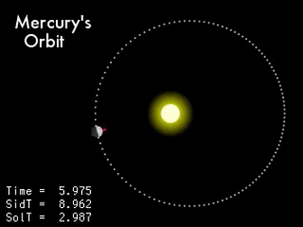

-
Mercury is the smallest planet in the Solar System. It is the closest planet to the sun.It makes one trip around the Sun once every 87.969 days. Mercury is bright when it is visible from Earth, ranging from −2.0 to 5.5 in apparent magnitude. It cannot be easily seen as it is usually too close to the Sun. Because Mercury is normally lost in the glare of the Sun, Mercury can only be seen in the morning or evening twilight or during a solar eclipse.
-
Less is known about Mercury than about other planets of our Solar System. Telescopes on the Earth show only a small, bright crescent, and putting a satellite in orbit around it is difficult. The first of two spacecraft to visit the planet was Mariner 10, which mapped only about 45% of the planet’s surface from 1974 to 1975. The second is the MESSENGER spacecraft, which finished mapping the planet in March 2013.
-
Mercury looks like Earth's Moon. It has many craters and areas of smooth plains, no moons around it and no atmosphere as we know it. However, Mercury does have an extremely thin atmosphere, known as an exosphere.Unlike Earth's Moon, Mercury has a large iron core, which gives off a magnetic field about 1% as strong as that of the Earth. It is a very dense planet due to the large size of its core. Surface temperatures can be anywhere from about 90 to 700 K (−183 °C to 427 °C, −297 °F to 801 °F), with the subsolar point being the hottest and the bottoms of craters near the poles being the coldest.
-
Even though Mercury is the closest planet to the Sun, it is not the warmest. This is because it has no greenhouse effect, so any heat that the Sun gives to it quickly escapes into space. The hottest planet is Venus.
-

- click here For More deatils